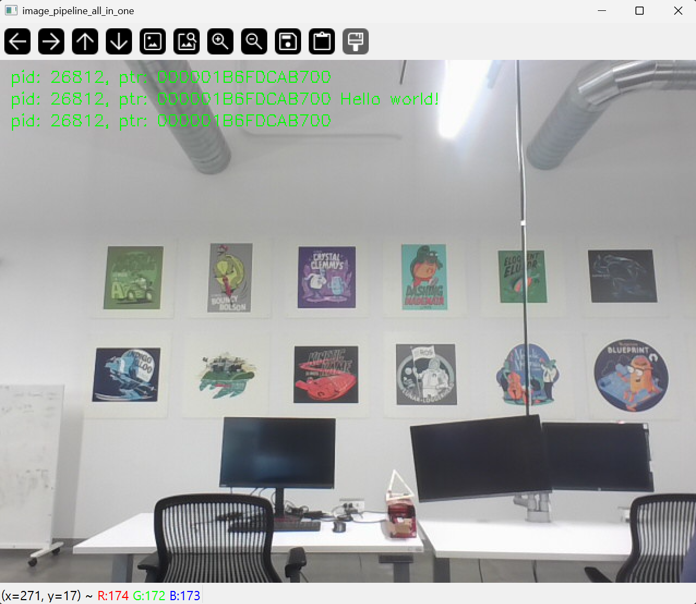
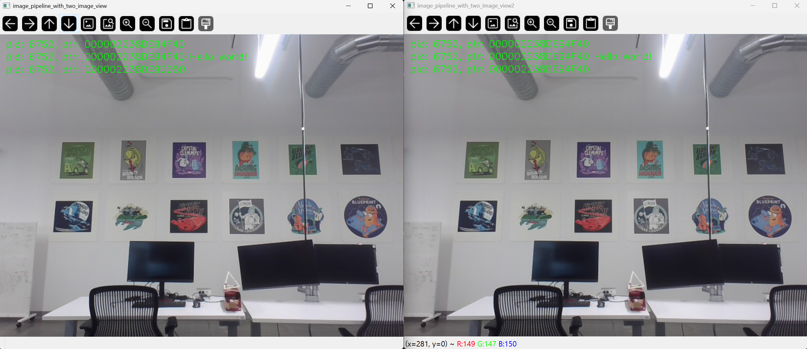
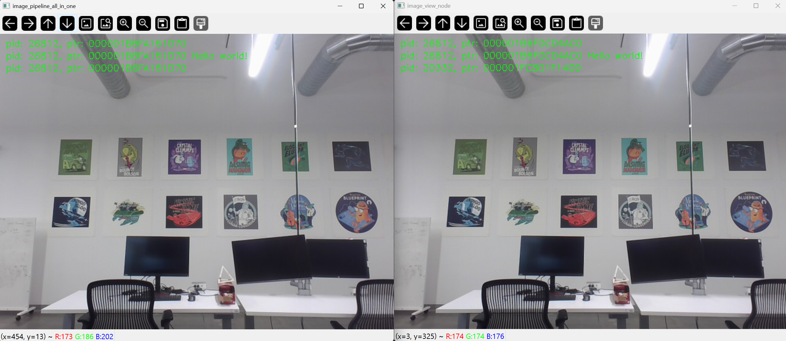

備註
您正在閱讀開發版本的文件。對於最新發行的版本，請參見 Lyrical。
Setting up efficient intra-process communication
背景
ROS applications typically consist of a composition of individual "nodes" which perform narrow tasks and are decoupled from other parts of the system. This promotes fault isolation, faster development, modularity, and code reuse, but it often comes at the cost of performance. After ROS 1 was initially developed, the need for efficient composition of nodes became obvious and Nodelets were developed. In ROS 2 we aim to improve on the design of Nodelets by addressing some fundamental problems that required restructuring of nodes.
In this demo we'll be highlighting how nodes can be composed manually, by defining the nodes separately but combining them in different process layouts without changing the node's code or limiting its abilities.
Installing the demos
See the installation instructions for details on installing ROS 2.
If you've installed ROS 2 from packages, ensure that you have ros-rolling-intra-process-demo installed.
If you downloaded the archive or built ROS 2 from source, it will already be part of the installation.
Running and understanding the demos
There are a few different demos: some are toy problems designed to highlight features of the intra-process communications functionality and some are end to end examples which use OpenCV and demonstrate the ability to recombine nodes into different configurations.
The two node pipeline demo
This demo is designed to show that the intra-process publish/subscribe connection can result in zero-copy transport of messages when publishing and subscribing with std::unique_ptrs.
First let's take a look at the source:
#include <chrono>
#include <cinttypes>
#include <cstdio>
#include <memory>
#include <string>
#include <utility>
#include "rclcpp/rclcpp.hpp"
#include "std_msgs/msg/int32.hpp"
using namespace std::chrono_literals;
// Node that produces messages.
struct Producer : public rclcpp::Node
{
Producer(const std::string & name, const std::string & output)
: Node(name, rclcpp::NodeOptions().use_intra_process_comms(true))
{
// Create a publisher on the output topic.
pub_ = this->create_publisher<std_msgs::msg::Int32>(output, 10);
std::weak_ptr<std::remove_pointer<decltype(pub_.get())>::type> captured_pub = pub_;
// Create a timer which publishes on the output topic at ~1Hz.
auto callback = [captured_pub]() -> void {
auto pub_ptr = captured_pub.lock();
if (!pub_ptr) {
return;
}
static int32_t count = 0;
std_msgs::msg::Int32::UniquePtr msg(new std_msgs::msg::Int32());
msg->data = count++;
printf(
"Published message with value: %d, and address: 0x%" PRIXPTR "\n", msg->data,
reinterpret_cast<std::uintptr_t>(msg.get()));
pub_ptr->publish(std::move(msg));
};
timer_ = this->create_wall_timer(1s, callback);
}
rclcpp::Publisher<std_msgs::msg::Int32>::SharedPtr pub_;
rclcpp::TimerBase::SharedPtr timer_;
};
// Node that consumes messages.
struct Consumer : public rclcpp::Node
{
Consumer(const std::string & name, const std::string & input)
: Node(name, rclcpp::NodeOptions().use_intra_process_comms(true))
{
// Create a subscription on the input topic which prints on receipt of new messages.
sub_ = this->create_subscription<std_msgs::msg::Int32>(
input,
10,
[](std_msgs::msg::Int32::UniquePtr msg) {
printf(
" Received message with value: %d, and address: 0x%" PRIXPTR "\n", msg->data,
reinterpret_cast<std::uintptr_t>(msg.get()));
});
}
rclcpp::Subscription<std_msgs::msg::Int32>::SharedPtr sub_;
};
int main(int argc, char * argv[])
{
setvbuf(stdout, NULL, _IONBF, BUFSIZ);
rclcpp::init(argc, argv);
rclcpp::executors::SingleThreadedExecutor executor;
auto producer = std::make_shared<Producer>("producer", "number");
auto consumer = std::make_shared<Consumer>("consumer", "number");
executor.add_node(producer);
executor.add_node(consumer);
executor.spin();
rclcpp::shutdown();
return 0;
}
As you can see by looking at the main function, we have a producer and a consumer node, we add them to a single threaded executor, and then call spin.
If you look at the "producer" node's implementation in the Producer struct, you can see that we have created a publisher which publishes on the "number" topic and a timer which periodically creates a new message, prints out its address in memory and its content's value and then publishes it.
The "consumer" node is a bit simpler, you can see its implementation in the Consumer struct, as it only subscribes to the "number" topic and prints the address and value of the message it receives.
The expectation is that the producer will print out an address and value and the consumer will print out a matching address and value. This demonstrates that intra-process communication is indeed working and unnecessary copies are avoided, at least for simple graphs.
Let's run the demo by executing ros2 run intra_process_demo two_node_pipeline executable (don't forget to source the setup file first):
$ ros2 run intra_process_demo two_node_pipeline
Published message with value: 0, and address: 0x7fb02303faf0
Published message with value: 1, and address: 0x7fb020cf0520
Received message with value: 1, and address: 0x7fb020cf0520
Published message with value: 2, and address: 0x7fb020e12900
Received message with value: 2, and address: 0x7fb020e12900
Published message with value: 3, and address: 0x7fb020cf0520
Received message with value: 3, and address: 0x7fb020cf0520
Published message with value: 4, and address: 0x7fb020e12900
Received message with value: 4, and address: 0x7fb020e12900
Published message with value: 5, and address: 0x7fb02303cea0
Received message with value: 5, and address: 0x7fb02303cea0
[...]
One thing you'll notice is that the messages tick along at about one per second. This is because we told the timer to fire at about once per second.
Also you may have noticed that the first message (with value 0) does not have a corresponding "Received message ..." line.
This is because publish/subscribe is "best effort" and we do not have any "latching" like behavior enabled.
This means that if the publisher publishes a message before the subscription has been established, the subscription will not receive that message.
This race condition can result in the first few messages being lost.
In this case, since they only come once per second, usually only the first message is lost.
Finally, you can see that "Published message..." and "Received message ..." lines with the same value also have the same address.
This shows that the address of the message being received is the same as the one that was published and that it is not a copy.
This is because we're publishing and subscribing with std::unique_ptrs which allow ownership of a message to be moved around the system safely.
You can also publish and subscribe with const & and std::shared_ptr, but zero-copy will not occur in that case.
The cyclic pipeline demo
This demo is similar to the previous one, but instead of the producer creating a new message for each iteration, this demo only ever uses one message instance. This is achieved by creating a cycle in the graph and "kicking off" communication by externally making one of the nodes publish before spinning the executor:
#include <chrono>
#include <cinttypes>
#include <cstdio>
#include <memory>
#include <string>
#include <utility>
#include "rclcpp/rclcpp.hpp"
#include "std_msgs/msg/int32.hpp"
using namespace std::chrono_literals;
// This node receives an Int32, waits 1 second, then increments and sends it.
struct IncrementerPipe : public rclcpp::Node
{
IncrementerPipe(const std::string & name, const std::string & in, const std::string & out)
: Node(name, rclcpp::NodeOptions().use_intra_process_comms(true))
{
// Create a publisher on the output topic.
pub = this->create_publisher<std_msgs::msg::Int32>(out, 10);
std::weak_ptr<std::remove_pointer<decltype(pub.get())>::type> captured_pub = pub;
// Create a subscription on the input topic.
sub = this->create_subscription<std_msgs::msg::Int32>(
in,
10,
[captured_pub](std_msgs::msg::Int32::UniquePtr msg) {
auto pub_ptr = captured_pub.lock();
if (!pub_ptr) {
return;
}
printf(
"Received message with value: %d, and address: 0x%" PRIXPTR "\n", msg->data,
reinterpret_cast<std::uintptr_t>(msg.get()));
printf(" sleeping for 1 second...\n");
if (!rclcpp::sleep_for(1s)) {
return; // Return if the sleep failed (e.g. on :kbd:`ctrl-c`).
}
printf(" done.\n");
msg->data++; // Increment the message's data.
printf(
"Incrementing and sending with value: %d, and address: 0x%" PRIXPTR "\n", msg->data,
reinterpret_cast<std::uintptr_t>(msg.get()));
pub_ptr->publish(std::move(msg)); // Send the message along to the output topic.
});
}
rclcpp::Publisher<std_msgs::msg::Int32>::SharedPtr pub;
rclcpp::Subscription<std_msgs::msg::Int32>::SharedPtr sub;
};
int main(int argc, char * argv[])
{
setvbuf(stdout, NULL, _IONBF, BUFSIZ);
rclcpp::init(argc, argv);
rclcpp::executors::SingleThreadedExecutor executor;
// Create a simple loop by connecting the in and out topics of two IncrementerPipe's.
// The expectation is that the address of the message being passed between them never changes.
auto pipe1 = std::make_shared<IncrementerPipe>("pipe1", "topic1", "topic2");
auto pipe2 = std::make_shared<IncrementerPipe>("pipe2", "topic2", "topic1");
rclcpp::sleep_for(1s); // Wait for subscriptions to be established to avoid race conditions.
// Publish the first message (kicking off the cycle).
std::unique_ptr<std_msgs::msg::Int32> msg(new std_msgs::msg::Int32());
msg->data = 42;
printf(
"Published first message with value: %d, and address: 0x%" PRIXPTR "\n", msg->data,
reinterpret_cast<std::uintptr_t>(msg.get()));
pipe1->pub->publish(std::move(msg));
executor.add_node(pipe1);
executor.add_node(pipe2);
executor.spin();
rclcpp::shutdown();
return 0;
}
Unlike the previous demo, this demo uses only one Node, instantiated twice with different names and configurations.
The graph ends up being pipe1 -> pipe2 -> pipe1 ... in a loop.
The line pipe1->pub->publish(std::move(msg)); kicks the process off, but from then on the messages are passed back and forth between the nodes by each one calling publish within its own subscription callback.
The expectation here is that the nodes pass the message back and forth, once a second, incrementing the value of the message each time.
Because the message is being published and subscribed to as a unique_ptr the same message created at the beginning is continuously used.
To test those expectations, let's run it:
$ ros2 run intra_process_demo cyclic_pipeline
Published first message with value: 42, and address: 0x7fd2ce0a2bc0
Received message with value: 42, and address: 0x7fd2ce0a2bc0
sleeping for 1 second...
done.
Incrementing and sending with value: 43, and address: 0x7fd2ce0a2bc0
Received message with value: 43, and address: 0x7fd2ce0a2bc0
sleeping for 1 second...
done.
Incrementing and sending with value: 44, and address: 0x7fd2ce0a2bc0
Received message with value: 44, and address: 0x7fd2ce0a2bc0
sleeping for 1 second...
done.
Incrementing and sending with value: 45, and address: 0x7fd2ce0a2bc0
Received message with value: 45, and address: 0x7fd2ce0a2bc0
sleeping for 1 second...
done.
Incrementing and sending with value: 46, and address: 0x7fd2ce0a2bc0
Received message with value: 46, and address: 0x7fd2ce0a2bc0
sleeping for 1 second...
done.
Incrementing and sending with value: 47, and address: 0x7fd2ce0a2bc0
Received message with value: 47, and address: 0x7fd2ce0a2bc0
sleeping for 1 second...
[...]
You should see ever increasing numbers on each iteration, starting with 42... because 42, and the whole time it reuses the same message, as demonstrated by the pointer addresses which do not change, which avoids unnecessary copies.
The image pipeline demo
In this demo we'll use OpenCV to capture, annotate, and then view images.
備註
If you are on macOS and these examples do not work or you receive an error like ddsi_conn_write failed -1, then you'll need to increase your system wide UDP packet size:
$ sudo sysctl -w net.inet.udp.recvspace=209715
$ sudo sysctl -w net.inet.udp.maxdgram=65500
These changes will not persist after a reboot.
Simple pipeline
First we'll have a pipeline of three nodes, arranged as such: camera_node -> watermark_node -> image_view_node
The camera_node reads from camera device 0 on your computer, writes some information on the image and publishes it.
The watermark_node subscribes to the output of the camera_node and adds more text before publishing it too.
Finally, the image_view_node subscribes to the output of the watermark_node, writes more text to the image and then visualizes it with cv::imshow.
In each node the process id and the pointer address of the ROS message is written onto the image with cv::putText.
The watermark and image view nodes are designed to modify the image without copying it and so the addresses imprinted on the image should all be the same as long as the nodes are in the same process and the graph remains organized in a pipeline as sketched above.
備註
On some systems (we've seen it happen on Linux), the address printed to the screen might not change. This is because the same unique pointer is being reused. In this situation, the pipeline is still running.
Let's run the demo by executing the following executable:
$ ros2 run intra_process_demo image_pipeline_all_in_one
You should see something like this:

You can pause the rendering of the image by pressing the spacebar and you can resume by pressing the spacebar again.
You can also press q or ESC to exit.
If you pause the image viewer, you should be able to compare the addresses written on the image and see that they are the same.
Pipeline with two image viewers
Now let's look at an example just like the one above, except it has two image view nodes.
All the nodes are still in the same process, but now there will be two instances of the image_view_node and so two image view windows should show up.
(Note for macOS users: your image view windows might be on top of each other).
Let's run it with the command:
$ ros2 run intra_process_demo image_pipeline_with_two_image_view

Just like the last example, you can pause the rendering with the spacebar and continue by pressing the spacebar a second time. You can stop the updating to inspect the pointers written to the screen.
As you can see in the example image above, we have one image with all of the pointers the same and then another image with the same pointers as the first image for the first two entries, but the last pointer on the second image is different. To understand why this is happening consider the graph's topology:
camera_node -> watermark_node -> image_view_node
-> image_view_node2
The link between the camera_node and the watermark_node can use the same pointer without copying because there is only one intra-process subscription to which the message should be delivered.
But for the link between the watermark_node and the two image view nodes the relationship is one to many, so if the image view nodes were using unique_ptr callbacks then it would be impossible to deliver the ownership of the same pointer to both.
It can be, however, delivered to one of them.
Which one would get the original pointer is not defined, but instead is simply the last to be delivered.
And so one of the images being viewed is the original, with all the pointers the same, and the other is a copy of the original image, made between the watermark_node and one of the image_view_node instances, which will have a different pointer for the third line of text.
Pipeline with inter-process viewer
One other important thing to get right is to avoid interruption of the intra-process zero-copy behavior when inter-process subscriptions are made.
To test this we can run the first image pipeline demo, image_pipeline_all_in_one, and then run an instance of the stand alone image_view_node (don't forget to prefix them with ros2 run intra_process_demo in the terminal).
This will look something like this:

It's hard to pause both images at the same time so the images may not line up, but the important thing to notice is that the image_pipeline_all_in_one image view shows the same address for each step.
This means that the intra-process zero-copy is preserved even when an external view is subscribed as well.
You can also see that the inter-process image view has different process IDs for the first two lines of text and the process ID of the standalone image viewer in the third line of text.